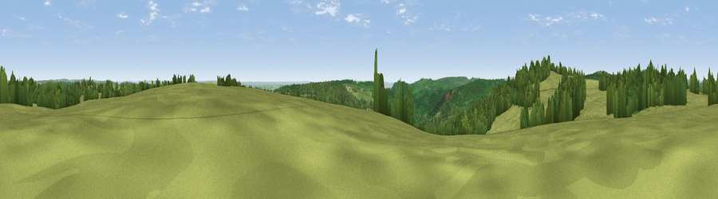

Viewpoint near St Briavels
#17537 in England · top 33% of its area beats it · near St BriavelsThe view, rendered

A 360° render of this exact spot computed from the terrain model, tree cover and land cover — summer colours, afternoon light, calibrated against photographs of famous viewpoints. Real trees, hedges and buildings will differ in detail.
The panorama
Grey silhouette: terrain skyline in each direction (720 bearings, Earth curvature and refraction included). Dashed green: skyline with trees (+15 m) and buildings (+8 m) as obstacles. Blue strip: how far the ground is visible on each bearing.
Where the view opens
Wedge length = distance to the farthest visible ground on that bearing (vegetation-aware). Rings at 10, 25 and 50 km.
What fills the view
50% grassland · 46% woodland · 3% cropland ·
Angular shares of the visible panorama (visual magnitude), not map area. Landscape diversity 0.37 (0–1 Shannon).
Key numbers
More beautiful places nearby
The staircase of upgrades: each row has a higher view potential than everything closer. Driving times are estimates from straight-line distance, calibrated against real road routing — check an actual route before setting out.
| Place | Direction | Drive | Score |
|---|---|---|---|
| Hart Hill | W · 1 km | ~2 min | 61.6 |
| Viewpoint near Hewelsfield | ESE · 3 km | ~7 min | 69.4 |
| Viewpoint near Hewelsfield | SE · 3 km | ~8 min | 70.7 |
| Buck Stone | N · 9 km | ~18 min | 71.0 |
| Viewpoint near Welsh Newton | NNW · 14 km | ~25 min | 72.0 |
| Viewpoint near Goodrich | N · 16 km | ~28 min | 74.0 |
| Viewpoint near Ruardean | NNE · 16 km | ~29 min | 74.2 |
| Skenchill | NNW · 17 km | ~29 min | 75.8 |
51.72502, -2.65470 · source: screening · position refined by local search. Computed location — check access rights before visiting.